my treasure box
－1999/3/2－
今日の舞台は茨城と千葉。霞ヶ浦から太平洋岸に沿って南へと進みました。
| ○茨城県土浦市 発 |
| ＝＞ 国道３５４号線 －＞ 国道３５５号線 －＞ 国道５１号線 －＞ 国道１２４号線 －＞ 国道１２６号線 －＞ 国道１２８号線 ＝＞ |
| ○千葉県丸山町 着 |
～霞ヶ浦～
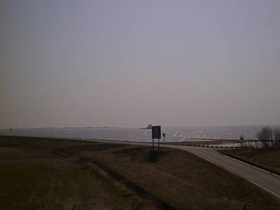
茨城県土浦市から、霞ヶ浦に入ります。霞ヶ浦にかかる橋が、霞ヶ浦大橋。この写真はこの橋の端で撮った霞ヶ浦の写真です。
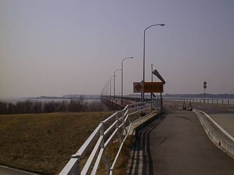
これが霞ヶ浦大橋になります。
～鹿島神宮～
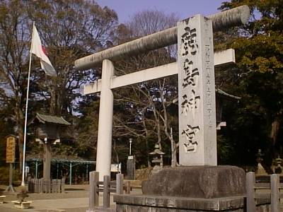
鹿島市に突入。鹿島神宮に行って来ました。これは入り口の大鳥居です。
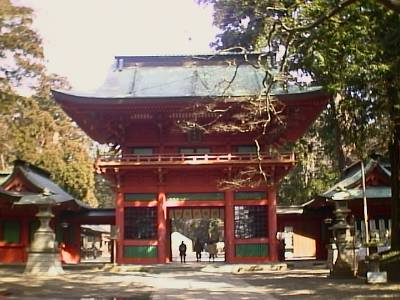
これが、桜門。
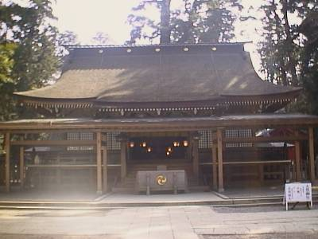
光で色がとんでしまいましたが、これが拝殿。後ろには本殿があります。
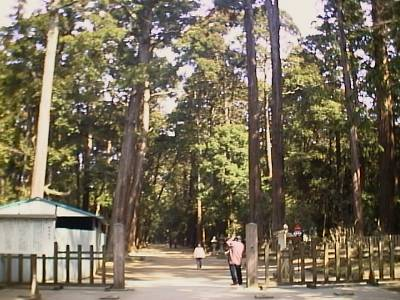
これが境内になります。高い杉の木が周りに植えられており、緑深い印象を与えます。
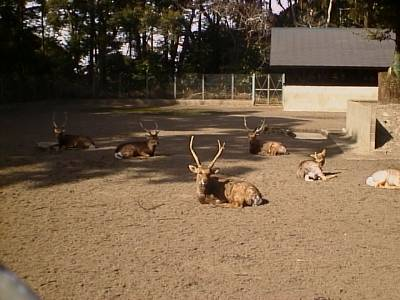
これは、鹿園の模様。鹿島神宮では鹿が神の使者として大切にされています。鹿島アントラーズのあれですね。
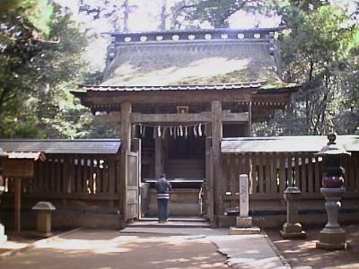
これが奥社になりますね。
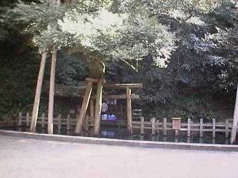
ここは御手洗（みたらし）池です。この池の横にある売店で思わずみたらしだんごを所望。その場で焼いてくれてうまかった。
～鹿島スタジアム～
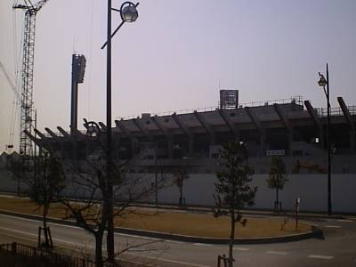
鹿島アントラーズの本拠地になります。２００１年のワールドカップのための増築工事で近寄れず。残念。道が非常にきれいに整備され、近代的なスタジアムという印象をうけました。試合の時は、この整備された道をサポーターが闊歩するわけですね。こういうところは、私が現在住んでいる静岡県清水市の市営球団清水エスパルスと同様でしょう。
～銚子・犬吠埼～
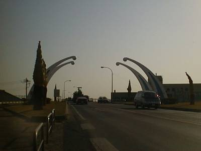
これが銚子大橋の入り口です。
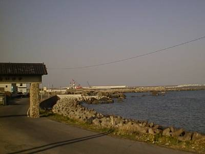
ここは、黒生浦。こっちの方角が利根川の河口です。
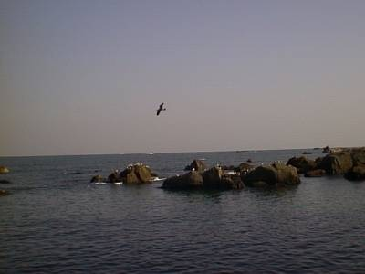
この近くの岩場にはウミネコ・ウミウ・カモメなどが生息しています。岩場の上に見られる白い物体はそれらの海鳥たちです。
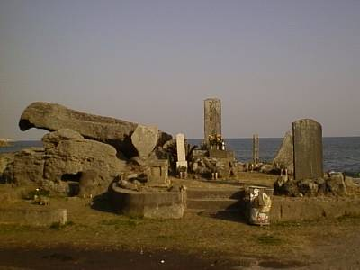
この碑は美加保遭難碑といい、江戸時代に榎本武揚が函館に向かうときに、仲間がここで遭難し、そのためにたてられたものです。
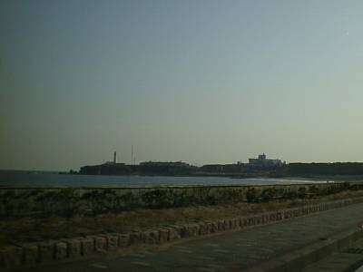
さらに道を進むと、犬吠埼と灯台が見えてきます。
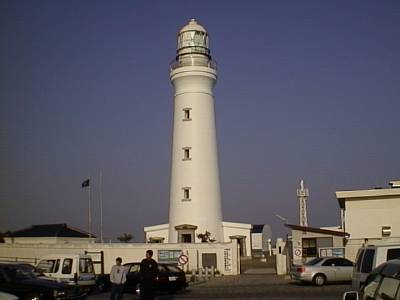
これが犬吠埼灯台です。静岡にある御前崎灯台とほとんど同じ形をしてました。
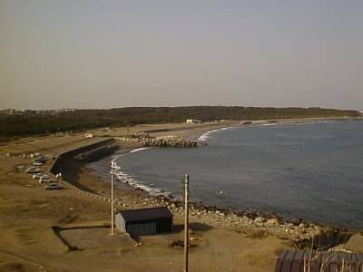
これは、犬吠埼から北方向を見た風景。
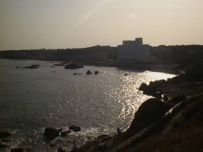
同様に、南方向を見た風景。
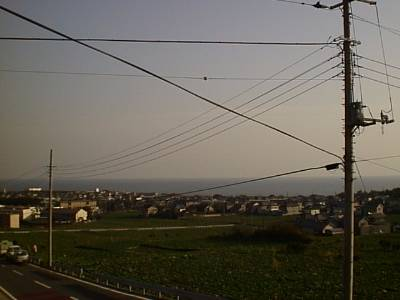
犬吠埼を過ぎ、さらに銚子を進みます。銚子市は「地球が丸く見える町」ということで、それをうたった展望台もありました。試しに写真を撮ってみましたが、この写真からは無理ですかね。
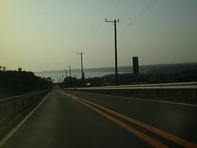
有料の銚子道路を進みます。すると奥の方に屏風ヶ浦・九十九里浜が見えてきます。
～九十九里浜～
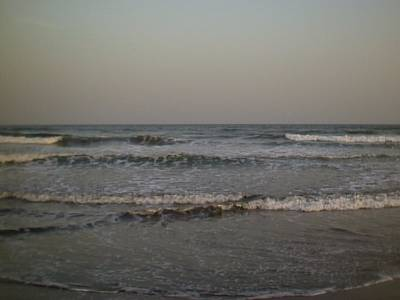
そして九十九里浜。真正面から見ても単なる太平洋ですね。では・・・
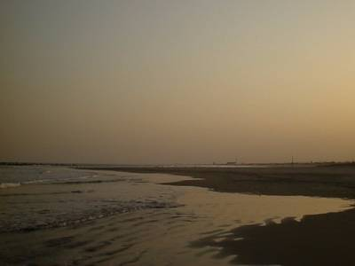
これが、南西方向。
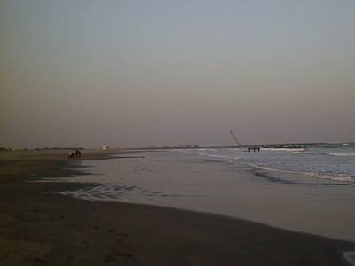
これが、北東方向。うーん、本当に九十九里なのかわからん。
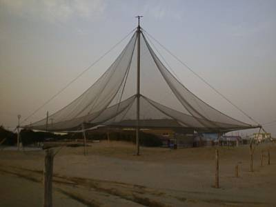
ここはふるさと自然公園という公園になっているのですが、その中にこのような物体が・・・。網が上からつるされている・・・。なんか意味があるのか気になったので、近くに海の家があり、そこがなぜか開いていたので聞いてみました。そこのおばちゃん曰く、「公園の象徴。日除け」。どう考えても日除けにはならないよなあと思いながらも、せっかく話を聞いたので、その海の家で夕飯を食することに。冬に誰もいない海の家でいわしの刺身定食を食べるのもまた一興。
この後、勝浦に行きました。関係者立入禁止の勝浦漁港に勝手に入り、漁港や灯台の写真、そして「海中公園」という言葉に引かれて勝浦海中公園へ。すべていい写真はとれなかったのですが、そのなかでも、
～勝浦海中公園～
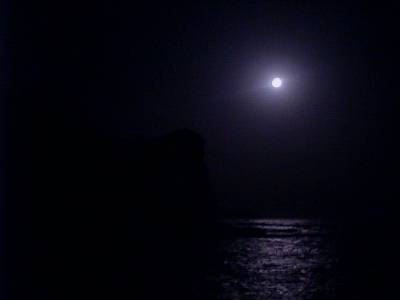
ここは素敵な場所でした。行ったのが夜でしたが、きれいな満月がでていたので、真っ暗ではなくかろうじて見られる状態です。ここは、文字通り、海の中に展望台のようなものがあり、そこから周りの断崖絶壁を見ることができます。夜だったので、この断崖絶壁から恐怖を感じるほど威圧感を感じました。ちょうど満月がでていたので写真を撮ってみました。とても幻想的で、ちゃんとしたカメラを持っていれば、と初めて感じた瞬間でした。
ということで、だいぶ長くなりましたが今日の行動でした。